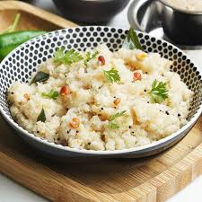

Go back home
Find below the recipe for a delicious Rava Upma:

Description:
Upma is a popular South Indian breakfast made of rava (semolina), green
chillies, curry leaves, lentils, tempering spices and sometimes
vegetables. It is aromatic, delicious, filling and a fast dish that you
can whip up under 20 minutes. Here we share the traditional authentic
method to make fluffy, non-sticky and moist rava upma.
The traditional and authentic process to make Upma starts by roasting
semolina which is also known as suji or Bombay rava. This is the key step
in making the dish fluffy without getting sticky. While this cools down, a
tempering is made with ghee, mustard seeds, chana dal, urad dal, ginger,
green chillies, curry leaves and hing,
Recipe:
Ingredients:
- Semolina
- Oil/Ghee
- Whole Spices
- Fresh Ginger
- Onion and Green Chillies
- Lentils
- Asafoetida
Steps:
-
Add semolina to a pan and roast on a low to medium heat until it turns
crunchy. Keep stirring to prevent discolouring. Set aside to cool when
it becomes crunchy.
-
While you roast the rava, set aside the following:
- Slice or fine chop 1 small onion
- Peel and mince or grate 1/2 inch ginger
- Chop or slice 1 or 2 green chillies
- Rinse and pat dry 1 sprig curry leaves
-
If you like vegetables you may add green peas, carrots and 2 chopped
French Beans
-
To temper you will need:
- 1/2 teaspoon mustard seeds
- 1/2 teaspoon cumin seeds
- 1 teaspoon urad dal skinned
- 1 1/2 teaspoon chana dal
- 2 tablespoons peanuts
- 8 to 12 whole cashews
- On medium heat fry raw peanuts till deep golden.
- Pour oil onto the hot pan and add mustard and cumin seeds
- Add chana and urad dal when the seeds sputter
-
Fry them till light golden for a minute then add the cashews and fry
till golden browm
-
Next put the hing, green chillies, ginger and curry leaves. Fry for a
minute.
- Add the chopped onion
- Saute for 3 to 4 minutes, until the onions turn transparent.
-
Pour 3 cups water and add ½ teaspoon salt. (Use 2¾ cups for a drier
upma). Mix it well and taste the water. The water should be slightly
salty. If needed add more salt. If you are using a cast iron pan, use up
to 3 cups water.
-
Bring the water to a rolling boil on a medium to high flame, then reduce
the flame to a low heat
-
Pour the roasted rava in a very slow stream with one hand and constantly
stir the water with the other hand. This incorporates the rave well to
the water without turning lumpy.
- Stir well and check for any lumps. Break up if any.
- You will see all of the water is absorbed. Then cover and cook.
- After 2 to 4 minutes, open and stir the upma rava
- Lastly add the ghee at this stage. This is optional. Switch off and keep the pan covered for about 5 minutes.